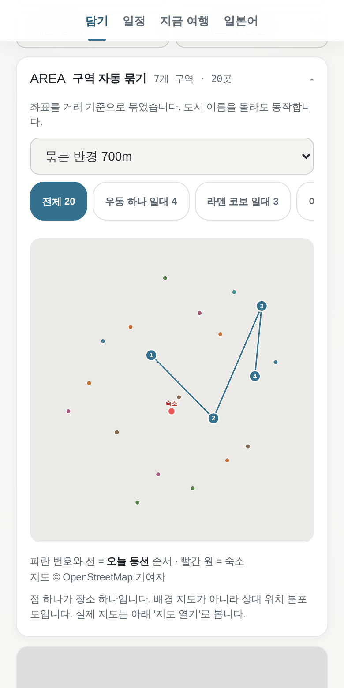
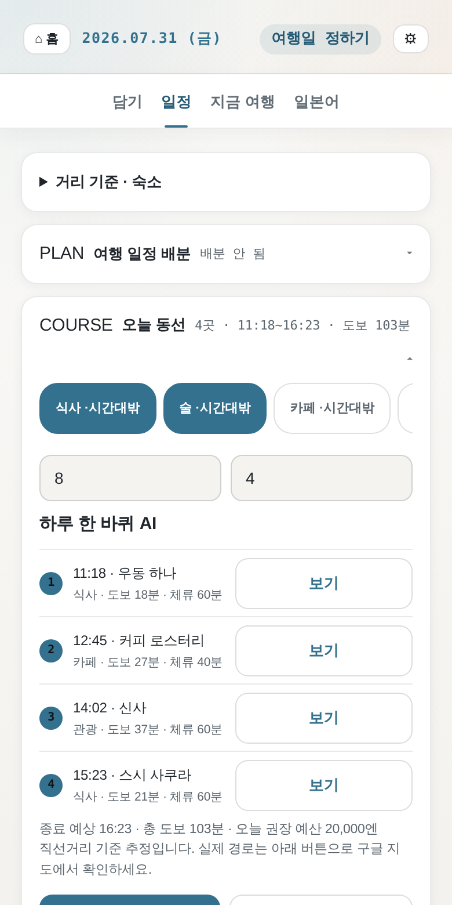
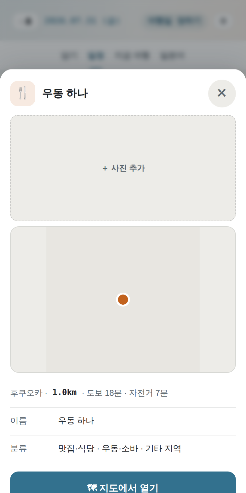

구글 지도에 저장한 장소가 100곳이 넘는데 막상 여행 가면
호텔 근처 아무 데나 들어가지 않으셨나요.
저장한 목록을 숙소·시간·거리에 맞춰 오늘 갈 순서로 바꿔 드립니다.
설치 없이 브라우저에서 바로 씁니다 · 아이폰은 홈 화면에 추가하면 앱처럼 열립니다
인스타·유튜브에서 본 곳을 저장하는 건 1초. 그런데 목록이 쌓이면 어디가 어딘지, 뭘 이미 가봤는지 알 수 없게 됩니다.
지도 켜고, 영업시간 찾고, 거리 재고, 번역기 켜고. 그러다 지쳐서 눈앞에 보이는 가게로 들어갑니다.
어디를 갔는지, 얼마를 썼는지 기억이 안 납니다. 다음 여행에서 같은 목록을 또 처음부터 봅니다.
구글 지도 저장 목록을 파일로 내려받아 넣습니다. 인스타·틱톡·유튜브 링크를 붙여넣어도 됩니다. 이미 가 본 곳은 한 번에 표시해 걸러냅니다.
숙소와 날짜를 넣으면 거리·영업시간·끼니 시간을 따져 하루 동선을 만듭니다. 지도에 ①②③ 순서로 그려 줍니다.
현지에서 현재 위치 기준으로 가까운 곳을 뽑고, 비가 오면 실내 위주로 다시 짭니다. 그 가게에서 쓸 현지 회화도 같이 나옵니다.

저장한 곳 전부를 지도에분류별 색, 구역 자동 묶기, 가 본 곳 제외
오늘 갈 순서도착 시각·도보 시간·체류 시간까지
한 곳을 누르면지도·거리·주소, 애플 지도/구글 지도로 바로화면은 실제 앱을 캡처한 것입니다. 장소 데이터는 예시입니다.
거리·영업시간·끼니 시간을 따져 순서를 만듭니다. AI에게 맡길 수도 있습니다.
실제 지도에 순서대로 선을 그립니다. 어디서 어디로 가는지 한눈에 보입니다.
방문 표시한 곳은 다음 동선에서 자동으로 빠집니다. 여러 곳을 한 번에 표시할 수 있습니다.
비 예보가 있으면 실내 비중이 높은 후보로 갈아탑니다.
하루 권장 예산과 남은 돈을 자국 통화로 환산해 보여줍니다.
목적지 말로 회화팩이 준비됩니다. 일본어는 사람이 직접 쓰고 검수한 90일 교재이고, 그 밖의 나라는 AI가 만들어 줍니다(무료 키 필요).
다녀와서 사진을 올리면 언제 어디에 갔는지 일지로 남습니다.
하루 동선을 이미지 한 장으로 만들어 SNS에 바로 올립니다.
데이터가 끊겨도 앱이 열립니다. 저장한 목록은 그대로 보입니다.
저장한 장소, 메모, 사진, 방문 기록은 사용하는 브라우저 안에만 저장됩니다. 서버가 없어서 보낼 곳도 없습니다. 회원가입도 로그인도 없습니다.
그래서 백업은 직접 하셔야 합니다. 앱 안에 백업 파일을 내려받는 버튼이 있습니다. 브라우저 데이터를 지우거나 폰을 바꾸면 기록이 사라집니다.
한 번 결제 · 구독 아님
이후 정가 19,900원
먼저 써보고 정하셔도 됩니다.
그냥 받아서 장소 30곳까지는 무료로 다 쓰실 수 있습니다.
지도·동선·AI·일본어까지 전부 열려 있고, 담을 수 있는 개수만 다릅니다.
신청하시면 사용 방법과 함께 주소를 보내 드립니다.
아닙니다. 주소를 열면 바로 실행됩니다. 아이폰은 사파리에서 공유 → 홈 화면에 추가를 하면 아이콘이 생기고 앱처럼 열립니다. 설치도 업데이트도 필요 없습니다.
구글 Takeout에서 저장 목록을 내려받아 파일을 넣으면 됩니다. 안내가 앱 첫 화면에 있습니다. 인스타·틱톡·유튜브 링크를 하나씩 붙여넣거나, 장소를 직접 입력해도 됩니다.
있습니다. 구글 저장 목록을 CSV로 내려받으면 위도·경도가 들어 있지 않습니다. 좌표가 없으면 목록·메모·지도 앱 연결은 되지만 거리 계산과 동선 그리기가 안 됩니다. Takeout의 JSON 형식으로 받으면 좌표가 함께 들어옵니다.
구글에서 무료로 발급되는 키를 앱에 한 번 넣으면 됩니다. 카드 등록이 필요 없습니다. 발급 방법은 앱 설정에 단계별로 안내되어 있습니다. 키를 넣지 않아도 동선·지도·목록은 그대로 동작합니다.
됩니다. 목적지를 정하면 검색·거리·권역이 그 도시 기준으로 맞춰집니다. 회화도 목적지 말로 나옵니다. 다만 품질이 다릅니다 — 일본어는 사람이 직접 쓰고 검수한 90일 교재이고, 중국어·태국어 등 다른 나라 말은 AI가 만든 회화팩입니다(무료 AI 키를 넣으면 한 번에 만들어 저장됩니다). AI 회화팩은 원어민 감수 단계를 한 번 더 거쳐 만들고, 화자 성별(태국어 ครับ/ค่ะ 처럼 성별로 말끝이 갈리는 언어)도 맞춰 줍니다. 그래도 사람이 검수한 것은 아닙니다. 어색한 문장은 앱에서 그 줄만 다시 만들 수 있고, 현지에서 한 번 더 확인해 주세요.
안 됩니다. 서버가 없어서 기기끼리 동기화되지 않습니다. 백업 파일을 내려받아 다른 기기에서 불러오는 방식은 됩니다.
일주일 안에 말씀해 주시면 이유를 묻지 않고 전액 환불합니다.